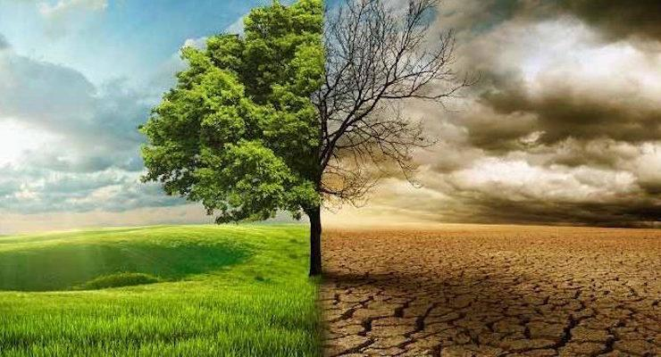

التغير المناخي
يُعَدُّ التغير المناخي من أكبر التحديات البيئية التي تواجه البشرية اليوم. يتسبب التغير المناخي في زيادة درجات الحرارة العالمية وتأثيراتها الخطيرة على الطبيعة والبيئة والحياة البشرية. تعرف على أسباب وتأثيرات التغير المناخي وكيف يمكن العمل على مواجهة هذه المشكلة العالمية هنا.
